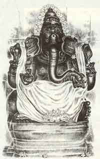

|
 |
Ganesh is the very famous god in
the Indian Mythology. Before starting any activity He is to
be worshiped first. He is called by many names such as
Vinayagar, Vigneshwar, Gajamugan, Ekathandha, Chathurbujan,
Gajanana, Ganapathi, Lamboothara etc.,. He will be found in
every nook and corner in a place. He is elephant faced with
four hands and one tusk. Three of His hands carrying Pasha
(a rope), ANKUSHA (a spear-like weapon curved at one end)
and MODAKA (a pudding like sweet dish) and the fourth held
in a gesture which assures help and protection to the
devotee. Ganesha's bulky head symbolizes his extraordinary
intelligence. His ears are broad like winnowing pans.
Winnowing pans are used to winnow grain. The husk and the
grain get separated, so does Ganesha distinguish between
truth and untruth. It may also be said that the broad ears
symbolize his capacity to listen to the prayers of all his
devotees with great attention. While his ever-moving trunk
teaches that one should be active always, his single tusk
denotes single-mindedness in action. His huge belly
signifies that the entire Brahmanda (universe) is hidden
within Ganapathi. He rides a rat. The rat personifies evil
qualities like anger, too much of pride and selfishness.
Riding on the rat shows that Ganesha checks these evil
passions.
| |
Eight Inner
Forms of Lord Ganesh |
|
| |
33 Forms of
Vinayagar |
|
|